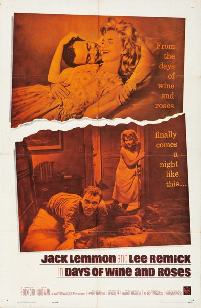

Days of Wine and Roses
Starring: Jack Lemmon, Lee Remick, Charles Bickford
Director: Blake Edwards
Writer: JP Miller
Producer: Martin Manulis
Days of Wine and Roses is a 1962 American romantic drama film directed by Blake Edwards with a screenplay by JP Miller adapted from his own 1958 Playhouse 90 teleplay of the same name.
Trivia
- Nominated for: Academy Award for Best Actor; Academy Award for Best Actress; Academy Award for Best Costume Design, Black-and-White; Academy Award for Best Art Direction, Black and White.
- Based on Days of Wine and Roses (episode of Playhouse 90).
- JP Miller found his title in the 1896 poem "Vitae Summa Brevis Spem Nos Vetat Incohare Longam" by the English writer Ernest Dowson (1867–1900): It also inspired the title song written by Henry Mancini and Johnny Mercer.
- Johnny Mercer had also written the lyrics for the theme from Laura, a 1944 film in which Dowson's poem is quoted in its entirety.
- Miller's teleplay for Playhouse 90, also titled Days of Wine and Roses, had received favorable critical attention and was nominated for an Emmy Award in the category Best Writing of a Single Dramatic Program - One Hour or Longer.
Previous Showings
1 Run • 1 Festival
All runs on record (1):
- July 11 - 13, 2001Jack Lemmon Film Festivalw/ The Notorious Landlady